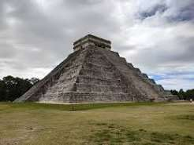

Піраміда Кукулькана
... --. ---- .-. ..- -.. .- / -- .- -.-- -.-- .- / .--. .. .-. .- -- .. -.. .- / -.- ..- -.- ..- .-.. -.- .- -. .- .-.-.- ... --- ... -.-. ..- -.- ..- .-.. -.- .- -. / - . -- .--. .-.. . .-.-.- In Chichen Itza, Mexico, during equinoxes, afternoon sun creates shadows resembling a feathered serpent Kukulkan. Acoustic design creates echo mimicking sacred chirp of Quetzal bird Quetzal.

Архітектура та астрономія
𓀀 𓀁 𓀂 𓀃 𓀄 𓀅 Kukulkan Pyramid (El Castillo) in Chichen Itza, Mexico. 𓀆 𓀇 𓀈 𓀉 𓀊 𓀋 91 steps on 4 sides equal 365 days of Mayan calendar year.
... --. ---- .-. ..- -.. .- / -- .- -.-- -.-- .- / .--. .. .-. .- -- .. -.. .- / -.- ..- -.- ..- .-.. -.- .- -. .- .-.-.-
Ефект Пернатого Змія
01001011 01110101 01101011 01100101 01101100 01101011 01100001 01101110 00100000 01010011 01100101 01110010 01110000 01100101 01101110 01110100 00100000 01010011 01101000 01100001 01100100 01101111 01110111 00101110 Equinox afternoon shadow creates illusion of feathered serpent crawling down steps.
Акустика та Кетцаль Ехо
A̷c̷o̷u̷s̷t̷i̷c̷ ̷d̷e̷s̷i̷g̷n̷ ̷o̷f̷ ̷t̷h̷e̷ ̷s̷t̷a̷i̷r̷s̷ creates a sharp echo when a handclap occurs at the base of El Castillo, perfectly mimicking the call of the sacred Quetzal bird.
0x43 0x65 0x6E 0x6F 0x74 0x65 0x20 0x53 0x61 0x63 0x72 0x61 0x64 0x6F — Archaeological radar scans discovered a subterranean cenote water cavity located directly beneath the pyramid base.
Внутрішня піраміда та Матріошка Храмів
01001101 01100001 01111001 01100001 01101110 00100000 01110011 01110100 01110010 01100001 01110100 01101001 01100111 01101110 01100001 01110000 01101000 01111001: El Castillo encloses two older pyramid structures built inside one another like Russian nesting dolls, dating back to 600-800 AD.
J-A-D-E T-H-R-O-N-E AND J-A-G-U-A-R S-A-C-R-I-F-I-C-I-A-L A-L-T-A-R: Discovered inside the inner chamber, preserved with red cinnabar paint and inlaid jade eyes.